Hey everyone! I’m in the final phases of tweaking in terms of the influence cards. They have overall been pretty balanced, and people have enjoyed them a lot. However, there were a couple of cards that were consistently passed over, indicating that they were not very desirable, or too confusing. One major change is the elimination of all influence cards that require action points to use. While they were pretty interesting cards, it became clear that they were a bit too clunky. Even if they ultimately paid off, people didn’t like them because they ate into their actions.
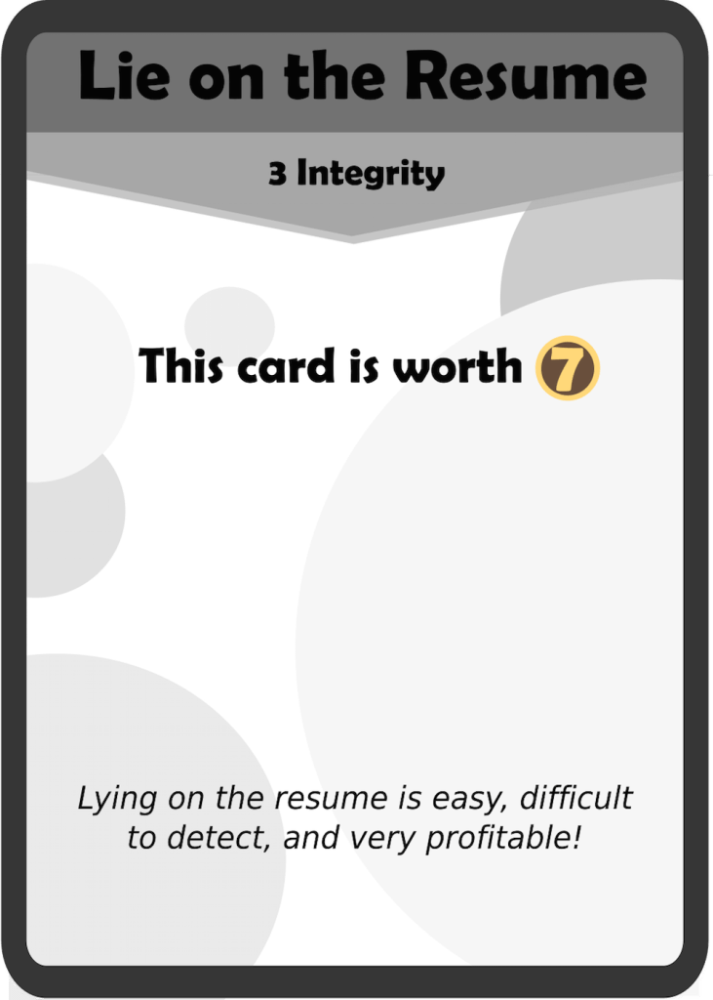 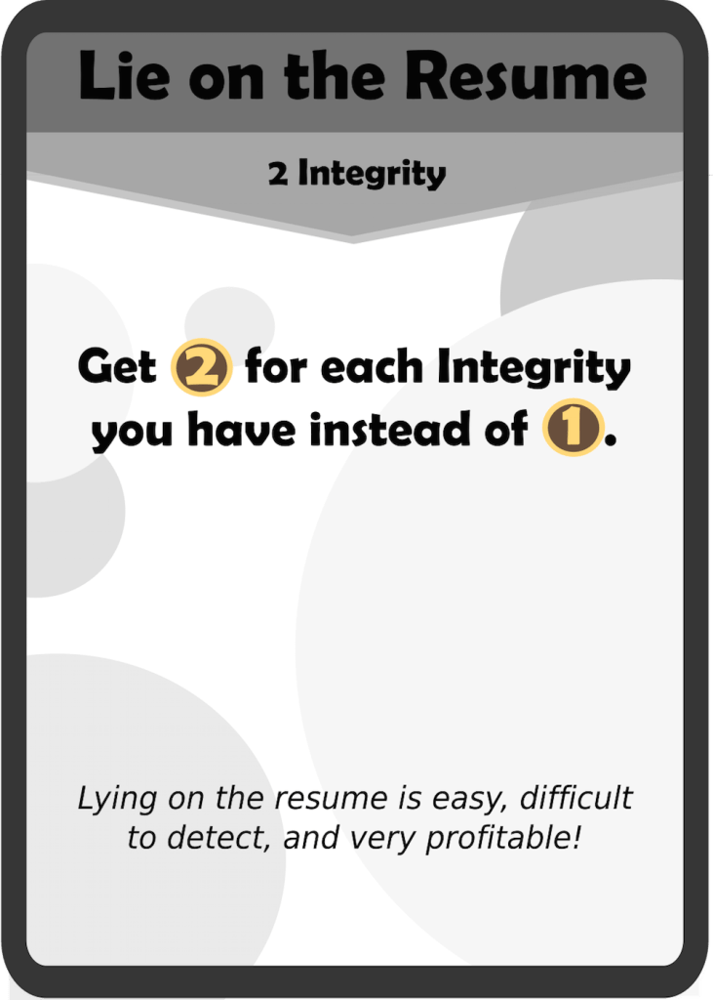This change was long-due ever since the change to Integrity. It also offers a more interesting decision: you can gain a burst of RP, but in exchange must maintain a high Integrity. After play-testing with it at 3 Integrity, I felt that it could be lowered to 2 Integrity as it was rarely worth it otherwise.
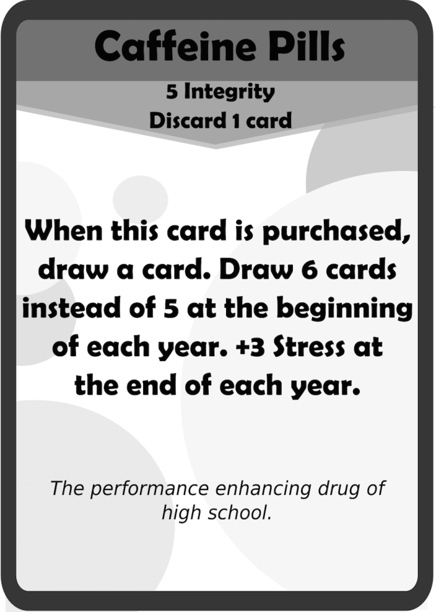 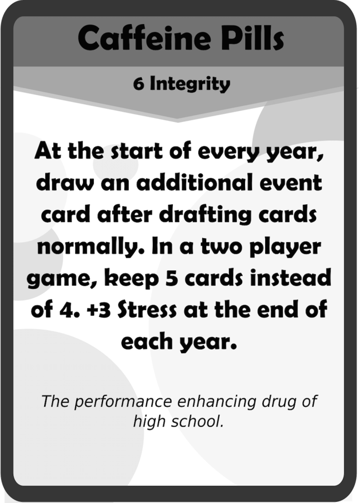Caffeine Pills was reworked a bit since there was no good reason to have a player discard a card and then draw one back. The cost is now 6 Integrity, which seems to be the point at which it is pretty balanced. It also has changed to clarify what it does, especially with the different rules between the two player and 3+ player variants.
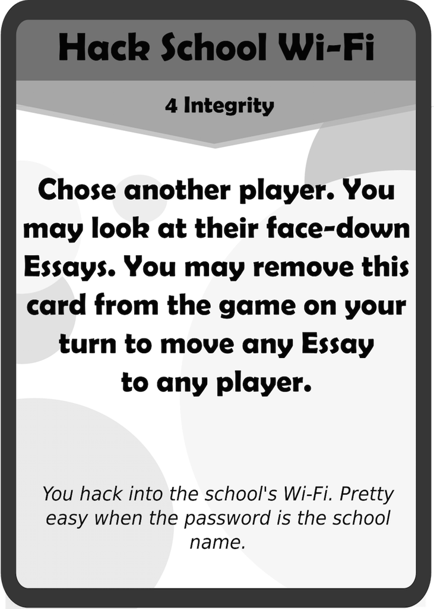 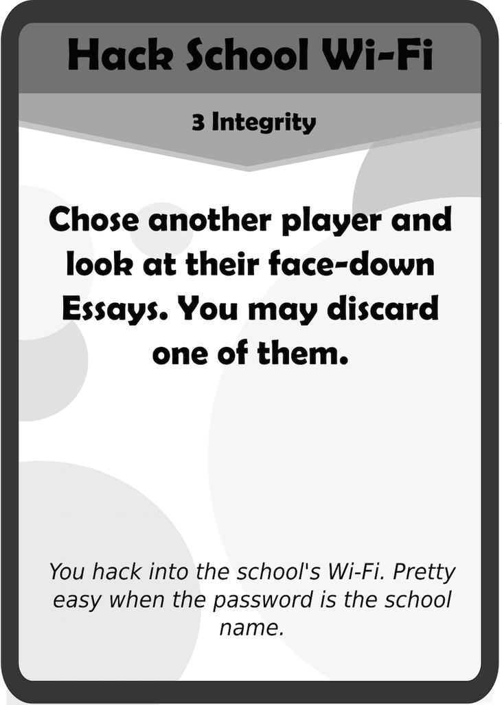Hack Wi-Fi had too much going on in one card. While it was a somewhat balanced ability, it slowed down the game a bit and was never activated until the last possible turn in the game (which kind of makes sense). The intention of the card however was to interfere with someone’s Essay strategy, which the new version does in a much cleaner way.
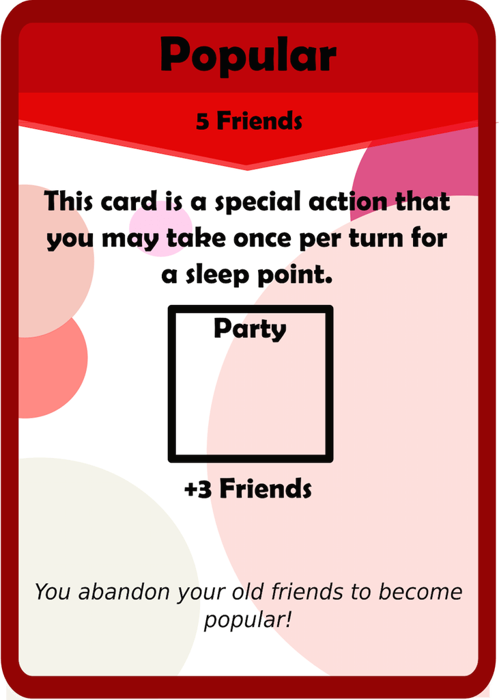 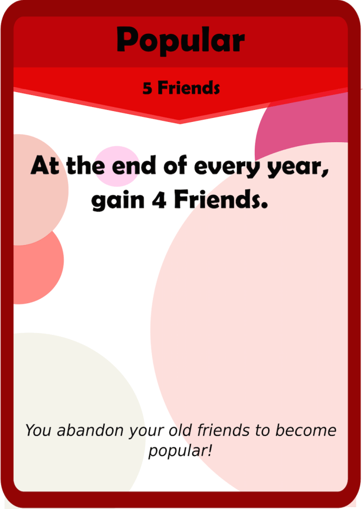One of the old special action cards, I felt that Popular was an important thematic card, but unfortunately rarely saw any use. This popular gives a similar calculated benefit (assuming you used the old popular once every turn, you would net gain 4 Friends) but now gives a lot more flexibility and is overall a much better card. I hope more people will go for it now.
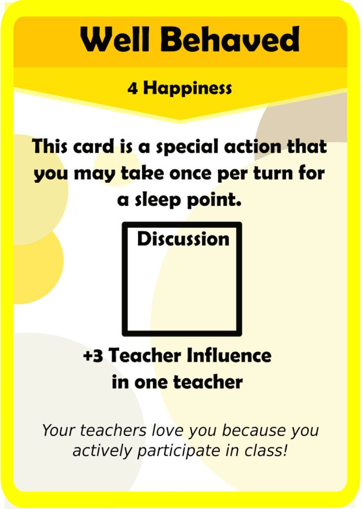 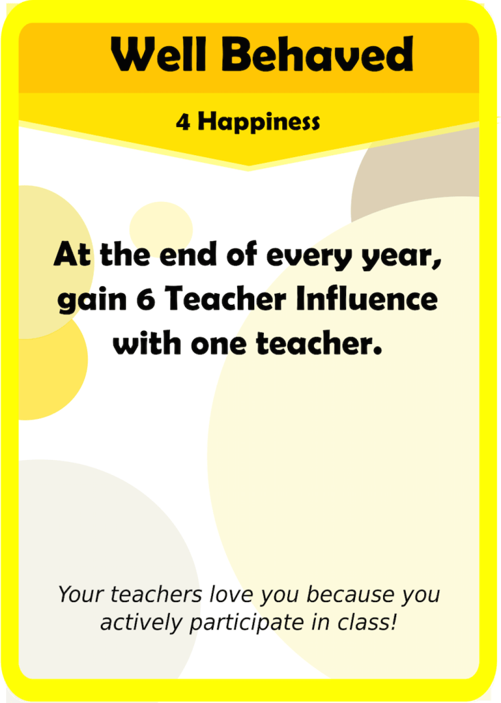Well Behaved is another special action that was modified. It’s gotten a significant buff now, but I feel that it is fair since it comes with a significant Happiness cost that comes with it’s own repercussions.
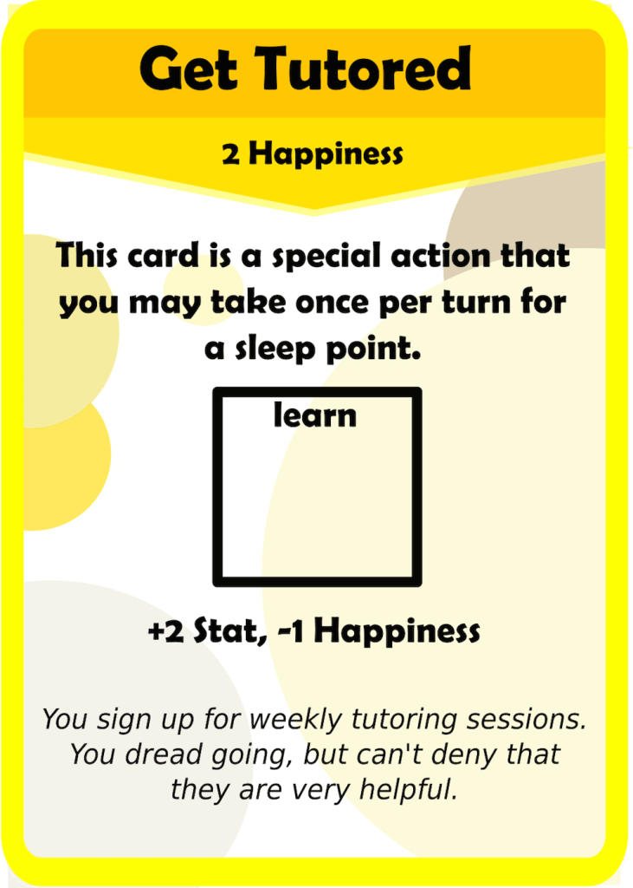 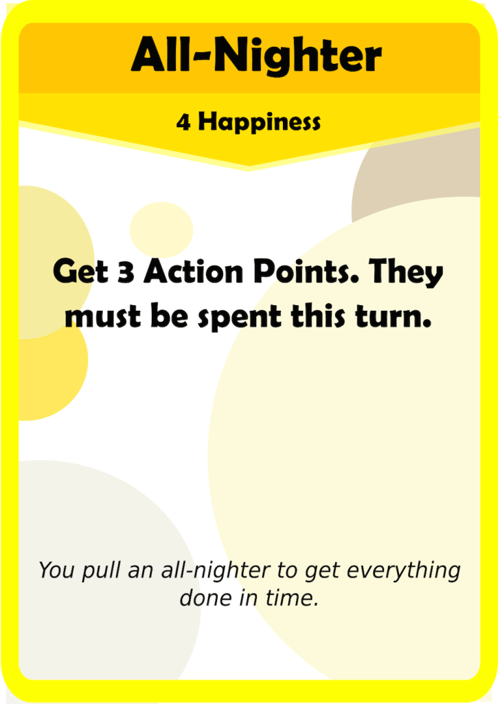Get tutored was scrapped entirely, which was a bit sad since it has been here since the beginning. However, there already is the “private tutor” influence card, and since I want 8 of each color influence card I decided to make a new influence card. Pulling an All-Nighter was a theme that was never really explored before, and I think this card makes perfect thematic sense. One thing that this card helps solve is a lack of actions. It’s entirely possible to have a situation where you have too many Stats and not enough actions to Test Correct everything. That’s just one example: the flexibility this card provides is fantastic. I’m honestly not sure if this card is too expensive, or too cheap. Will have to test it to find out.
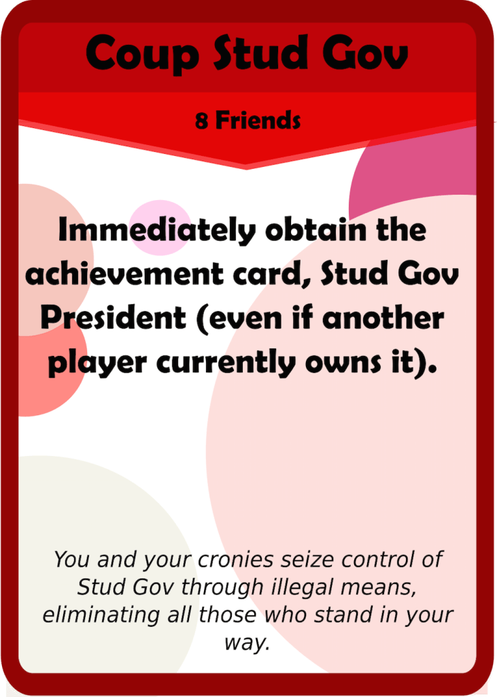 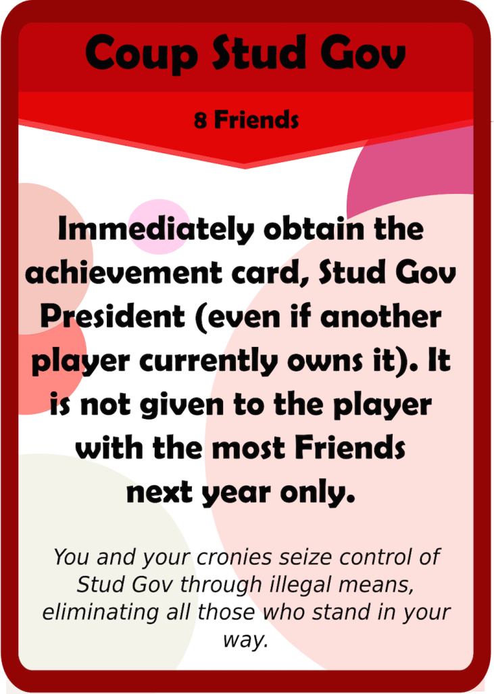The final card on the list, Coup Stud Gov needed another rework since it just gets bounced to the player with the most friends at the start of each year. That made the old Coup Stud Gov only good Senior year, while it is now generally always good. I’m constantly surprised by how relevant the Stud Gov Pres bonus tends to be.
What did you think of these balance changes? Let me know in the comments below! Thanks for reading, and make sure to subscribe if you enjoy this content.